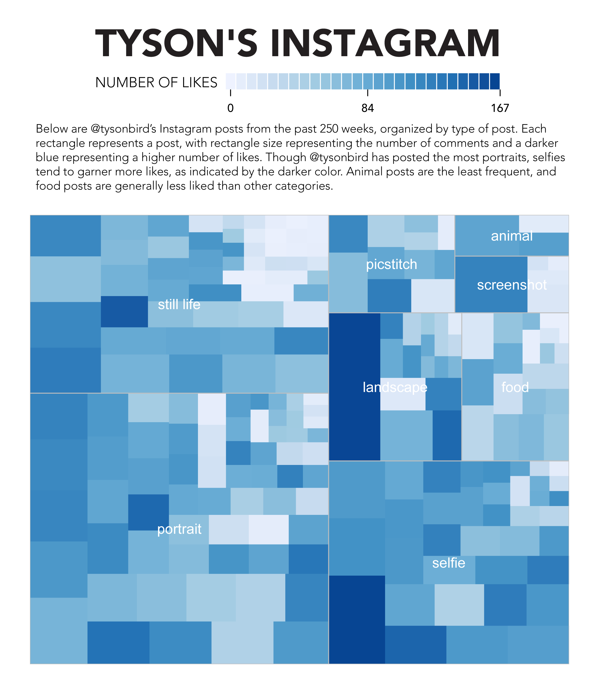
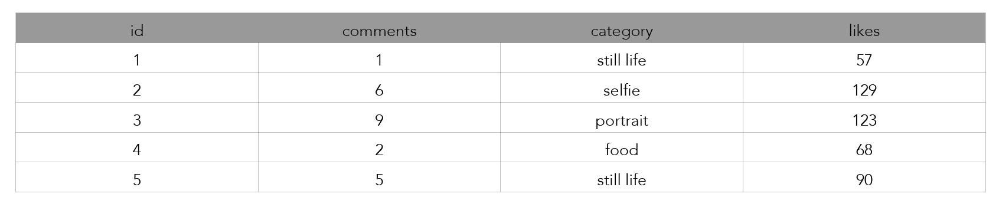
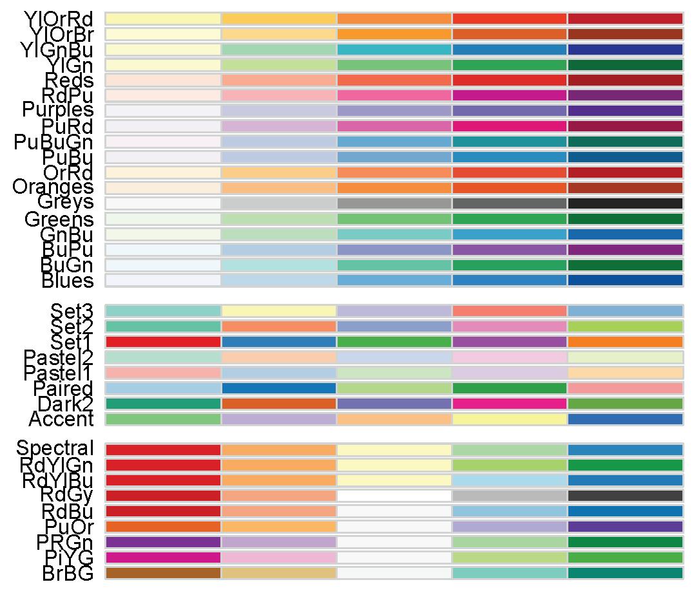

Creating a treemap with portfolio and R

Description
Portfolio allows the user to easily create treemaps using the R environment.
This visualization requires that a dataset have four attributes: a (numeric) ID, an area, a grouping and a density.
| ADVANTAGES OF PORTFOLIO | DISADVANTAGES OF PORTFOLIO |
- Shows a large amount of information that is not easily understandable from a chart
- Very fast to produce
- Able to switch variables quickly
- Efficient display of large amounts of data (Cheshire, spatial.ly)
|
- Extremely picky data input
- Limits on manipulation in R (Illustrator required for more advanced presentation changes)
- Non-interactive/hover capable
- No quick method of color manipulation (Cheshire, spatial.ly)
|
Examples of Journalistic Use
New York Times: How the Giants of Finance Shrank, Then Grew, Under the Financial Crisis
This use of a treemap from the New York Times pairs outputs from Portfolio with a timeline that allows the user to scroll and see how the 'Giants of Finance' shrank and grew during the financial crisis.
This was an effective use of a treemap because it is able to show percentage change of market share (color) while still displaying the total size and value of the companies (area).
To create this visualization, the journalist would have had to categorize market data into percentage change and market share and then create a portfolio map with these values as the arguments.
Truck Sales Slip, Slipping Up Chrysler
Also from the New York Times, this collection of treemaps compares sales of vehicles by major auto companies by type of vehicle and change in sales.
A treemap is perfect to show this data because the area of each rectangle represents the number of cars sold in 2006 and the color of the rectangle represents change in sales from ‘05-’06. By keeping the scale and color ramp consistent, all automakers can be compared at once.
The journalist in this case had to organize the data by number of vehicles sold and change in sales. They also had to assign categories based on type of vehicle.
Walkthrough
Creating a treemap in Portfolio requires two major steps: formatting the data and manipulating the visualization.
Unlike Google Charts treemaps, Portfolio requires a unique ID to accompany each value. This is likely because the tool was developed to analyze stock portfolios, so it expects very particular data.
The most straightforward format to use in organizing the data is ID | Area | Category | Color , though Portfolio can be told to use any column as any argument in creating the visualization.

Creating the Visualization
- Export the data as a .csv
- Download R and open it (looks like a command-line interface)
- Import the data into R, either from the web or from a local source: data <- read.csv("http://tabird.iweb.bsu.edu/instagram.csv")
- Download and install the Portfolio package in R: install.packages("portfolio")
library(portfolio)
- Call on the arguments for the treemap-making function to use: map.market(id=data$id, area=data$comments, group=data$category, color=data$likes, main='Instagram')
- Once the initial visualization is created, manipulate the code to change colors and scale (color.ramp.pos and color.ramp.neg): map.market Save the manipulated code then call on your adjustment by typing: source("~Path-to-Edits.R"). Rerun the program, this time changing "map.market" to your own manipulation of the code new.code(id=data$id, area=data$comments, group=data$category, color=data$likes, main='Instagram')
Resources
James Cheshire of spatial.ly has improved on the Portfolio package to make color manipulation much easier and with far more options than R's defaults.
- Load the CSV data into R as explained earlier.
- Install both Portfolio and RColorBrewer:
install.packages("RColorBrewer")
install.packages("portfolio")
library(RColorBrewer)
library(portfolio)
- Download Cheshire's new code and use it as an R source: source("~Path-to-treemapbrewer.R")
- Rerun the command with the proper arguments, this time using treemap instead of map.market. Also, now add a pal="~BrewerColors" and "textcol=~Text color" to manipulate the output: treemap(id=data$id, area=data$comments, group=data$category, color=data$likes, main="", pal="Blues", textcol="white")
- Save the visualization as PDF and make final manipulations in Illustrator, which will allow you to adjust fonts, text size and add chatter.
When the ColorBrewer method (rather than standard Portfolio) is used, the following color palettes are available:
